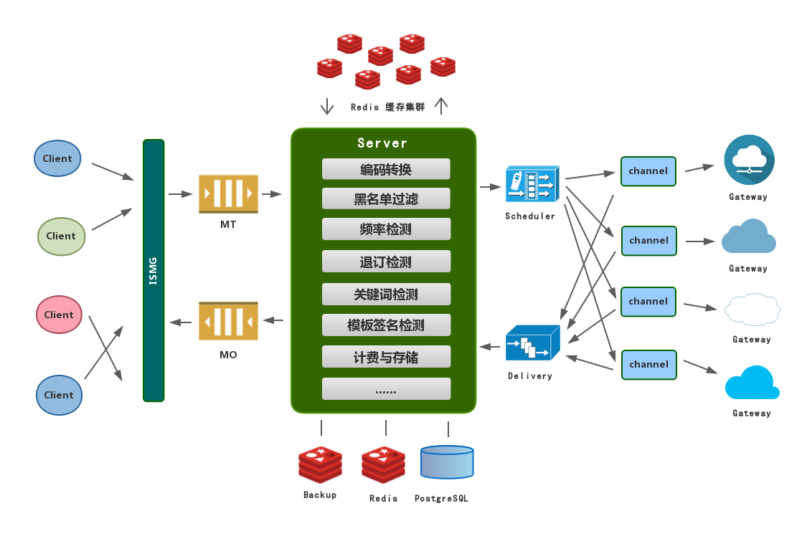

Design and architecture
lamb 系统设计与架构原理

lamb 架构图
ISMG
ismg 模块为前端接入网关模块，负责所有客户端连接，ismg 为多进程工作模式，master 进程负责接入，同时验证客户端身份，然后每客户端 fork 一个新 work 进程进行后续服务。客户端消息由 work 进程处理送往下一处理模块 MT 消息存储服务器。同时 work 工作进程会从 mo 下行消息服务器拉取消息，然后将消息推送给客户端
MT
mt 为消息队列服务器模块，所有客户端提交的未处理消息全部在此暂时存储，并且等待后端 Server 服务拉取消息进行处理，mt 模块只存储上行消息
MO
mo 为消息队列服务器模块，所有运营商网关下发的已处理消息全部在此暂时存储，并且等待前端 ismg 客户端服务拉取消息进行推送，mo 模块只存储下行消息
Server
server 为核心业务处理模块，负责消息编码转换、黑名单检测、频率检测、退订号码检测、关键词检测、模板签名检测、消息计费、消息存储等等业务处理，一旦以上所有处理完成，server 会将消息发送至 Scheduler 上行路由调度器模块进行处理，同时 server 模块还负责处理从 Delivery 下行路由调度器拉取的运营商推送消息，并且经过处理后送往 MO 下行消息队列存储服务器模块
Scheduler
Scheduler 为上行消息路由调度器，负责将 server 处理过的客户端消息发送到相应的落地通道网关队列，同时 Scheduler 还负责检查每个通道的号码限制安全策略，来对消息进行不同的路由调度和过滤
Delivery
Delivery 下行路由调度器，负责将运营商网关推送过来的消息进行处理，然后根据下行路由表存储到内部的消息队列中，等待前端 server 服务进程来拉取进行处理。
Channel
Channel 模块别名为 sp，负责处理运营商网关通道的连接和消息发送与接收，sp 模块会从 Scheduler 调度器拉取消息，然后经过消息编码处理和接入码处理，最后送到运营商网关。同时 sp 模块还负责接收运营商推送的消息，然后发送到 Delivery 下行路由调度器进行处理和存储。